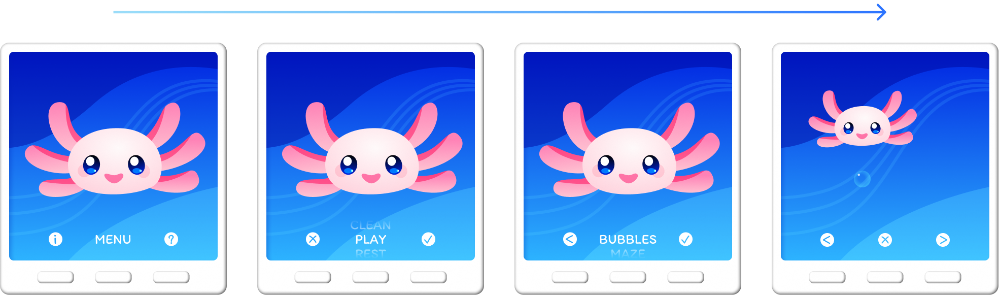
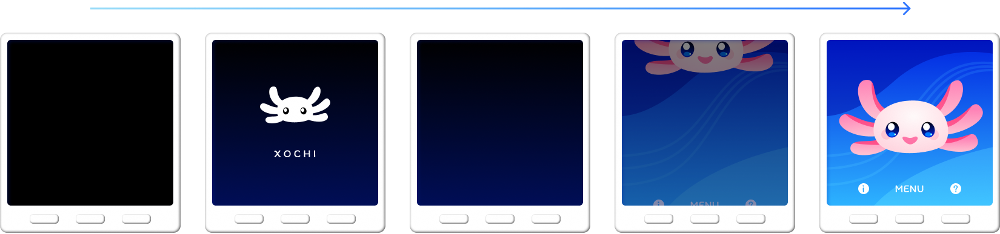
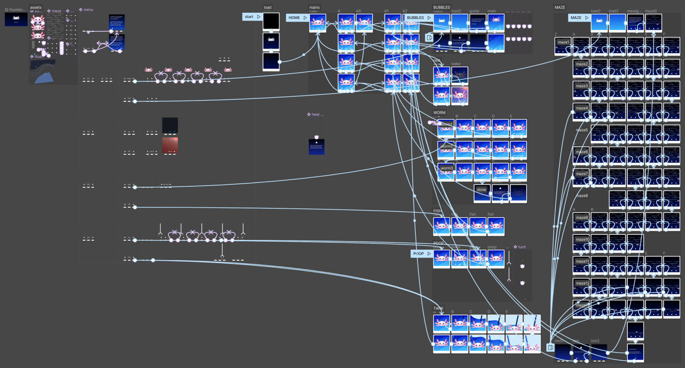

Xochi
9 May 2023 | Figma, 2 x 2.2" / 274 x 274 px
For this school project, we were tasked with creating a tamagotchi-style game. We needed four playable options (with two sub-options each), and navigation using only "physical" buttons. I focused on creating an intuitive, simple user interface and a friendly user experience.
device size: 2" x 2.2"
screen size: 274 x 274 px
controls: 3 buttons
character: Xochi the axolotl lives in Mexico City as part of the remote Adopt-an-Axolotl program
Backstory: Adopt-an-Axolotl
Adopt-an-Axolotl is a (fictional) program that allows you to remotely take care of your axolotl, Xochi. While the real Xochi lives in Mexico City and many parts of his care can be automated, you are responsible to manage his food and sleep schedules, as well as play games with him.
This program is designed to repopulate the endangered axolotl, eventually reintroducing them to the wild. But why are axolotls important? First, they're cute. Second, climate change has accelerated extinction across the globe, and we're working to reverse some of those consequences. Lastly, axolotls have regenerative abilities that are important to science. Imagine being able to regrow an arm!
When you enroll in Adopt-an-Axolotl, you help save the earth!
Navigation
A good user interface relies on an easy-to-use navigation system. To do this, I utilized visual grouping, matching the system and the real world, and recognition over recall. Each button has a distinct function at all times, as signified by the isomorphically corresponding icons or text on screen.
When the navigation feels natural, it is easier for the user to freely enjoy the game.
User Experience
Xochi loading animation
While a comfortable navigation system helps the user feel safe, the style, voice, and overall presentation improve the user experience as well. The tone of messaging is educational (and when necessary, firm) yet encouraging, offering positive feedback that gently guides the reader to the correct course of action. The bubbly typeface, smiling face, and gentle art style conveys a friendly comfort. Even the symmetric design creates a sense of stability.
I also composed the background music, stingers, and sound effects on my Roland RD-88 keyboard, keeping the mood lighthearted and fun. Appealing to one more of the five senses immerses the user further into the experience.
Messaging
Xochi guidance frames (left) and warning frames (right)
One of the things I struggled with most was consistent messaging. I had created toasts and warnings that were individual to each game/action/situation—and the result felt very haphazard and discontinuous. I redid all the messaging with the same overlay and text treatment, and it felt more holistically put together.
Xochi prototyping in Figma
For the full exploration and process deck PDF, click here.